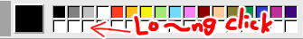

What is this site?
This is just oekaki site
I can't draw any lines!
This tool is tested on Chrome(Recommend), Edge, and FireFox browser on Desktop Windows 10.
It may not work on a Mac, iPad, or mobile device.
How to change save file name?

Click "Untitled" on title bar, and typing name you want.
After, save file is saved with the changed name.
When I loaded a large image file, the image can not be viewed properly.
This tools can display only less than 600px(width) image.
I want to change size of the canvas.

You can only change it to a vertical size like Pixiv's Drawr.
- You can see two small lines, bottom of canvas.
- Click that, and move cursor.
- Size limit is 150 ~ 800px.
Does this tool have Shortcut-keys?
Click "Shortcut-key" on the menubar, then description appears.
The green part is for right handed, blue part is for left-handeded layouts.
Not support keys configs
I want to move the tool's position

- As you can see above image, There is a small gray box.
- When clicked, 2 red bars appears.
- And drag position you want.
I want to draw with 50% opacity color

Click the large box in the color palette
What is large circle when using color picker  ?
?

It is magnifying glass.
Move cursor while clicked, magnifying glass will move by 1pixel
Easy to pick mid-colors.
What is many white boxes on color palette?

You can save custom color to these box
- Select the color you want to add in the color picker.
- Keep hold down click to save the color.
- Normal click is select the color
Smaller mouse cursor?
Click [ tiny] box on the right bottom.
tiny] box on the right bottom.
When I use image move tool , the image become disappear!
, the image become disappear!
Yes, it's not bug. I made so. Be careful to move the image.
If it failed just click Undo  button.
This feature makes it easy to clean the canvas.
button.
This feature makes it easy to clean the canvas.
How to reset canvas position after using move tool ?
?
Press the zoom-out  button or its shortcut key several times.
button or its shortcut key several times.
1x zooming resets the position of canvas
If you have a bug report or something to say, my Twitter and email (cube4none@gmail.com)